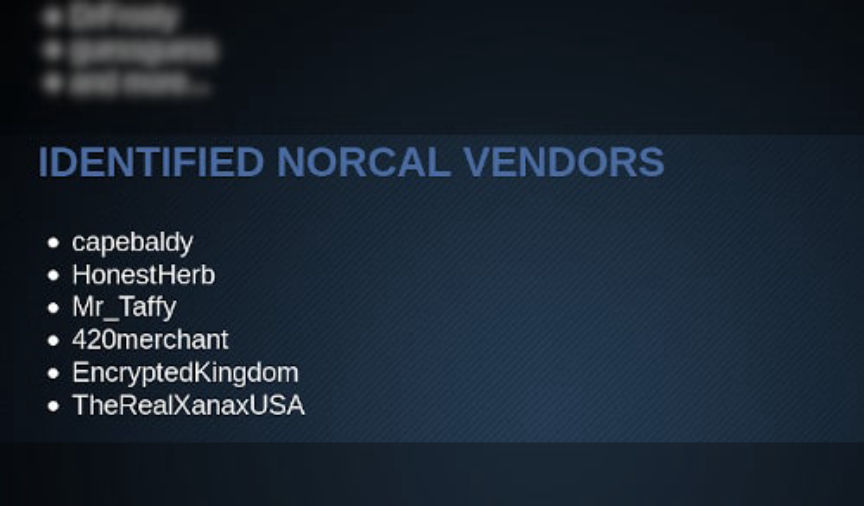
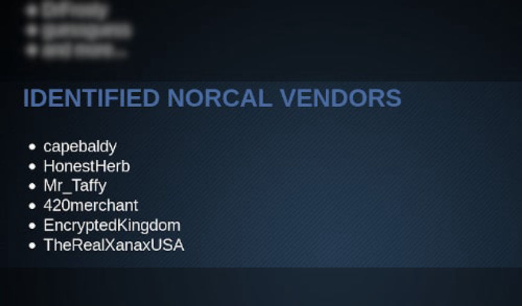

NCIDE Task Force Identified a Xanax Vendor
~2 min read | Published on 2019-11-25, tagged Arrested, Darkweb-Vendor, Drug-Bust, Drugs using 299 words.
The Northern California Illicit Digital Economy Task Force updated their onion service to include the name of another darkweb vendor that federal investigators had identified. This time, according to the task force’s list, investigators identified an alprazolam vendor with a presence on Dread, Cryptonia Market, and Empire Market.
Earlier this year, the Northern California Illicit Digital Economy (NCIDE) Task Force launched an onion service that had a list of arrested vendors as well as a list of “identified NorCal Vendors.” The names on the arrested vendor list match many of the names on the arrested darknet vendor list on this site. The list is fairly self explanatory. The list of identified vendors is a little less clear though. What constitutes an “identified vendor?” If law enforcement knows the identity of the vendor, why release this information before making an arrest?
In any case, the list is not a good thing for the named vendors.
The NCIDE Task Force has continued to update the list to reflect the status of investigations and cases. The first version of the site included only arrested vendors. The next update added the “Identified NorCal Vendors” list and three names. Later updates added names to both lists.
The most recent addition to the list is a vendor identified as “TheRealXanaxUSA.” According to a post on Dread, the vendor operated under multiple usernames and on a number of markets. They most recently used Cryptonia Market and Empire Market, according to one comment by a Dread user under the name “XanaxUSA.” That Dread user appears to be an account used by TheRealXanaxUSA. The vendor used the XanaxUSA username on Empire Market and TheRealXanaxUSA on Cryptonia Market, according to the comment.
Once Dread returns, customers of TheRealXanaxUSA will likely have some additional information about their former Xanax supplier.
Earlier this year, the Northern California Illicit Digital Economy (NCIDE) Task Force launched an onion service that had a list of arrested vendors as well as a list of “identified NorCal Vendors.” The names on the arrested vendor list match many of the names on the arrested darknet vendor list on this site. The list is fairly self explanatory. The list of identified vendors is a little less clear though. What constitutes an “identified vendor?” If law enforcement knows the identity of the vendor, why release this information before making an arrest?
The Updated List of Identified Vendors
In any case, the list is not a good thing for the named vendors.
The NCIDE Task Force has continued to update the list to reflect the status of investigations and cases. The first version of the site included only arrested vendors. The next update added the “Identified NorCal Vendors” list and three names. Later updates added names to both lists.
The most recent addition to the list is a vendor identified as “TheRealXanaxUSA.” According to a post on Dread, the vendor operated under multiple usernames and on a number of markets. They most recently used Cryptonia Market and Empire Market, according to one comment by a Dread user under the name “XanaxUSA.” That Dread user appears to be an account used by TheRealXanaxUSA. The vendor used the XanaxUSA username on Empire Market and TheRealXanaxUSA on Cryptonia Market, according to the comment.
Once Dread returns, customers of TheRealXanaxUSA will likely have some additional information about their former Xanax supplier.